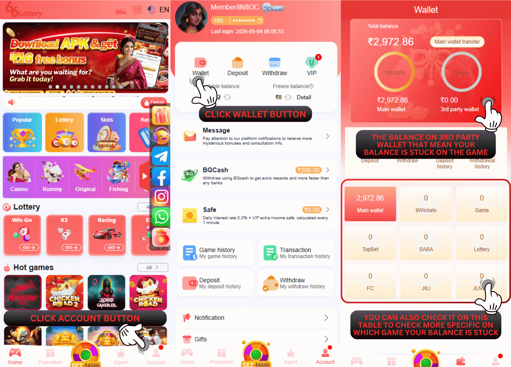

66 Lottery गतिविधि पुरस्कार
प्रश्न: 66 Lottery खाते पर मेरा बैलेंस गायब है, मेरा बैलेंस कहां गया?
उ: अपने बैलेंस के लिए आप इसे वॉलेट मेनू पर देख सकते हैं ताकि आपके बैलेंस का स्थान जांचा जा सके, जब आप गेम छोड़ने का प्रयास करते हैं तो गेम में अटक जाना संभव है।
प्रश्न: शेष राशि कैसे पुनर्प्राप्त करें?
उत्तर: नमस्कार, अपने गेम खाते के गेम बैलेंस को अपडेट करने के लिए, कृपया राशि पुनर्प्राप्त करने के लिए 【वॉलेट】 - 【9विकेट्स, गेम, टॉपबेट, सबा, लॉटरी, एफसी, जिली, जेएलएनडब्ल्यू】 - 【मुख्य वॉलेट】 पर क्लिक करें, धन्यवाद।
